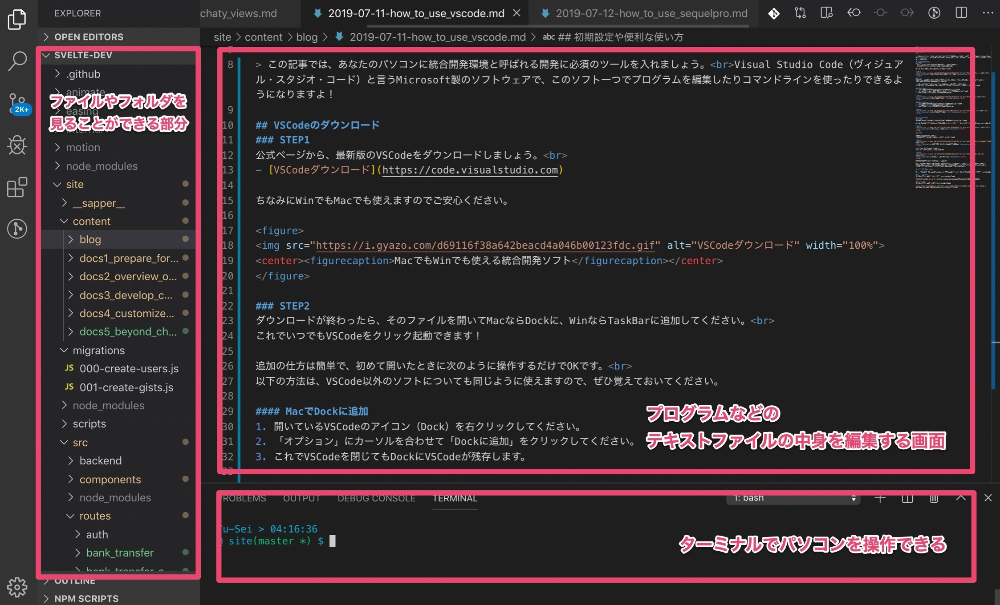

<!doctype html>

<html>
<head>
  <meta name="viewport" content="width=device-width, minimum-scale=1.0, initial-scale=1.0, user-scalable=yes">
  <meta name="theme-color" content="#4F7DC9">
  <meta charset="UTF-8">
  <title>事前準備｜はじめて学ぶReact</title>
  <link rel="stylesheet" href="//fonts.googleapis.com/css?family=Source+Code+Pro:400|Roboto:400,300,400italic,500,700|Roboto+Mono">
  <link rel="stylesheet" href="//fonts.googleapis.com/icon?family=Material+Icons">
  <link rel="stylesheet" href="https://storage.googleapis.com/codelab-elements/codelab-elements.css">
  <style>
    .success {
      color: #1e8e3e;
    }
    .error {
      color: red;
    }
  </style>
</head>
<body>
  <google-codelab-analytics gaid="UA-49880327-14"></google-codelab-analytics>
  <google-codelab codelab-gaid=""
                  id="how-to-install-nodejs"
                  title="事前準備｜はじめて学ぶReact"
                  environment="web"
                  feedback-link="https://github.com/Yu-Sei-M/yu-sei-m.github.io/issues">
    
      <google-codelab-step label="自分に必要な準備を確認" duration="3">
        <h2 is-upgraded>OS別に現状に合わせた作業スタート地点が異なります</h2>
<aside class="warning"><p>指示：コマンドラインを開いて、下記のコマンドを実行してください。</p>
</aside>
<pre>node -v
</pre>
<p>次のような表示になる場合は、あなたのパソコンにはnodeがまだ入っていません。</p>
<p>Windowsの方は<strong>作業A</strong>を、Macの方は<strong>作業B</strong>を進めてください。</p>
<p>次のようにnodeのバージョンが表示されたらあなたのパソコンにはnodeがインストールされています。</p>
<aside class="warning"><p>指示：作業A~Dのうち自分に該当するものを開き、記事の内容を元にnodeのバージョンを10.19.0にしてください。</p>
</aside>
<table>
<tr><td colspan="1" rowspan="1"><p>Node有無</p>
</td><td colspan="1" rowspan="1"><p>Win</p>
</td><td colspan="1" rowspan="1"><p>Mac</p>
</td></tr>
<tr><td colspan="1" rowspan="1"><p>まだない</p>
</td><td colspan="1" rowspan="1"><p><a href="https://techfun.cc/javascript/nodejs.html" target="_blank">作業A</a></p>
</td><td colspan="1" rowspan="1"><p><a href="https://yu-sei-m.github.io/how-to-install-nodejs/#1" target="_blank">作業B</a></p>
</td></tr>
<tr><td colspan="1" rowspan="1"><p>入ってる</p>
</td><td colspan="1" rowspan="1"><p><a href="https://qiita.com/satoyan419/items/56e0b5f35912b9374305" target="_blank">作業C</a></p>
</td><td colspan="1" rowspan="1"><p><a href="https://qiita.com/bigplants/items/2d75bf552e0da4a7e822" target="_blank">作業D</a></p>
</td></tr>
</table>
<h2 is-upgraded>４つのうちいずれかの作業をした後にもう一度チェック</h2>
<aside class="warning"><p>指示：コマンドラインを開いて、下記のコマンドを実行してください。</p>
</aside>
<pre>node -v
</pre>
<p>以下のように出力されていれば問題ありません。</p>


      </google-codelab-step>
    
      <google-codelab-step label="Nodeのインストール（Mac）" duration="5">
        <p>11月7日は、<strong>エンジニアが仕事で開発するときに限りなく近い状態でハンズオンを実施</strong>します。初心者だからと仕事をする時とは違う簡易な方法で学んでいては、効率が悪いからです。環境構築は始めたての人にとってはかなり難易度の高い作業ですが、なるべく丁寧に完了までの道筋を整理したので、ぜひ頑張って乗り越えてください。</p>
<aside class="special"><p>このページはMacの方でNodeが入っていない人の作業の解説です。nodeのバージョンが10.19.0の人は次に進んでください。</p>
</aside>
<h2 is-upgraded>【このページでやること】</h2>
<ul>
<li>Homebrewのインストール</li>
<li>Nodeのインストール</li>
<li>Nodeのバージョン管理ツールのインストール</li>
<li>Nodeのバージョンを変更</li>
</ul>
<p><code>Homebrewのインストール</code></p>
<pre>/bin/bash -c &#34;$(curl -fsSL https://raw.githubusercontent.com/Homebrew/install/master/install.sh)&#34;
</pre>
<aside class="special"><p>Homebrew（ホームブルー）は、コマンドラインで利用できるツールをインストールするツールです。つまり、HomebrewはMac（またはLinux）がデフォルトで備えていない便利なコマンドを導入できます。</p>
</aside>
<p><code>nodeのインストール</code></p>
<pre>brew install node
</pre>


      </google-codelab-step>
    
      <google-codelab-step label="VSCodeのインストール" duration="5">
        <p>11月7日のハンズオンではVSCodeを利用します。</p>
<aside class="special"><p>このページはVSCodeが入っていない人のための解説をしています。普段から使っている人は次に進んでください。</p>
</aside>
<h2 is-upgraded>VSCodeのダウンロード</h2>
<h3 is-upgraded>STEP1</h3>
<p>公式ページから、最新版のVSCodeをダウンロードしましょう。</p>
<ul>
<li><a href="https://code.visualstudio.com" target="_blank">VSCodeダウンロード</a></li>
</ul>
<p>ちなみにWinでもMacでも使えますのでご安心ください。 </p>
<h3 is-upgraded>STEP2</h3>
<p>ダウンロードが終わったら、そのファイルを開いてMacならDockに、WinならTaskBarに追加してください。 これでいつでもVSCodeをクリック起動できます！ 追加の仕方は簡単で、初めて開いたときに次のように操作するだけでOKです。</p>
<p>以下の方法は、VSCode以外のソフトについても同じように使えますので、ぜひ覚えておいてください。</p>
<h4 is-upgraded>MacでDockに追加</h4>
<ol type="1">
<li>開いているVSCodeのアイコン（Dock）を右クリックしてください。</li>
<li>「オプション」にカーソルを合わせて「Dockに追加」をクリックしてください。</li>
<li>これでVSCodeを閉じてもDockにVSCodeが残存します。</li>
</ol>
<p class="image-container"></p>
<h4 is-upgraded>WinでTaskBarに追加</h4>
<ol type="1">
<li>開いているVSCodeのアイコン（TaskBar）を右クリックしてください。</li>
<li>「タスクバーに追加」をクリックしてください。</li>
<li>これでVSCodeを閉じてもTaskBarにVSCodeが残存します。</li>
</ol>
<p class="image-container"></p>
<h2 is-upgraded>起動と画面の説明</h2>
<h3 is-upgraded>STEP3</h3>
<p>Macの人はDockの、Winの人はTaskBarのVSCodeをクリックして起動してください。 ちなみにMacの場合は、<code>command + space</code> で表示される検索バーに「VSC」と入力してエンターを押してもすぐに起動できます。</p>
<p class="image-container"></p>
<h3 is-upgraded>STEP4</h3>
<p>こちらはVSCodeの画面です。 この短い動画と同じように操作して同じ画面にしてください。 まずは、左バーの上のボタンを押してフォルダ一覧をみれるようにしましょう。</p>
<p class="image-container"></p>
<p>次にターミナル（Terminal）を開きます。 このVSCodeの下側の部分でパソコンをコマンドで操作できます。 （パソコンのコマンド操作をしたことがない人は、意味がわからなくてもまだ大丈夫です）</p>
<p class="image-container"></p>
<p>実際のフォルダを開くと、次のようになります。</p>
<p class="image-container"></p>
<p>左側にディレクトリの中身が表示され、新規作成やコピー、削除の他、名前の変更などの操作が可能になっています。</p>
<p>右側の上のスペースは、プログラムファイルにコードを記述するときにエディターとして使うスペースです。 右側の下には、主にコマンドラインを表示し、各種コマンドを実行します。</p>


      </google-codelab-step>
    
      <google-codelab-step label="Netlifyアカウント作成" duration="5">
        <p>11月7日のハンズオンではNelifyを利用します。</p>
<aside class="special"><p>このページはNetlifyのアカウントがない人のための案内です。普段から使っている人はこれで準備完了です。</p>
</aside>


      </google-codelab-step>
    
      <google-codelab-step label="これにて準備完了です" duration="5">
        <p>11月7日のハンズオンは初心者向けの内容ですが、事前に知識があるに越したことはありません。</p>
<p>パソコンを買ったばかりの人や、HTMLを見たこともない人、プログラミングに一切触れたことがない人が一緒に手を動かして作業するのは難しいので、以下のコンテンツで自学しておくと良いでしょう。</p>
<aside class="special"><p>以下はHTML/CSSとJavaScriptを見たことがない人のための案内です。</p>
</aside>
<p>流し見て聞いておくだけでもかなり変わってくるので、少し触った程度の方もぜひ復習しておいてください。</p>
<ul>
<li><a href="https://dotinstall.com/lessons/basic_html_v5" target="_blank">はじめてのHTML</a></li>
<li><a href="https://dotinstall.com/lessons/basic_css_v5" target="_blank">はじめてのCSS</a></li>
<li><a href="https://dotinstall.com/lessons/basic_javascript_v4" target="_blank">はじめてのJavaScript</a></li>
</ul>
<p>２倍速で再生すると１時間ほどでキャッチアップできます。</p>


      </google-codelab-step>
    
  </google-codelab>

  <script src="https://storage.googleapis.com/codelab-elements/native-shim.js"></script>
  <script src="https://storage.googleapis.com/codelab-elements/custom-elements.min.js"></script>
  <script src="https://storage.googleapis.com/codelab-elements/prettify.js"></script>
  <script src="https://storage.googleapis.com/codelab-elements/codelab-elements.js"></script>
  <script src="//support.google.com/inapp/api.js"></script>

</body>
</html>
